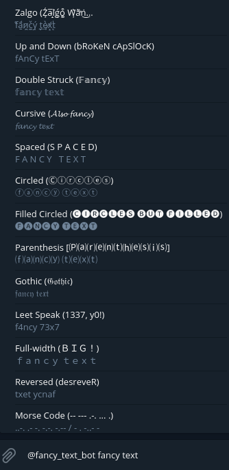

Github
Get fancy text styles for your Telegram Messages. With live preview of output as you type.
Try it out by tagging @fancy_text_bot on any chat screen on Telegram!
Example Preview:

Deployed using Zeit's